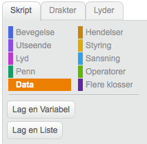

Trykk Lag en Variabel for å lage en index variabel

Prøv denne koden
Få figuren til å følge stien som ble tatt opp.
når jeg mottar [replay v]
sett [index v] til [1]
gjenta (length of [xs v]) ganger
sett x til (element (index) av [xs v])
sett y til (element (index) av [ys v])
endre [index v] med (1)
vent (0.1) sekunder
slutt